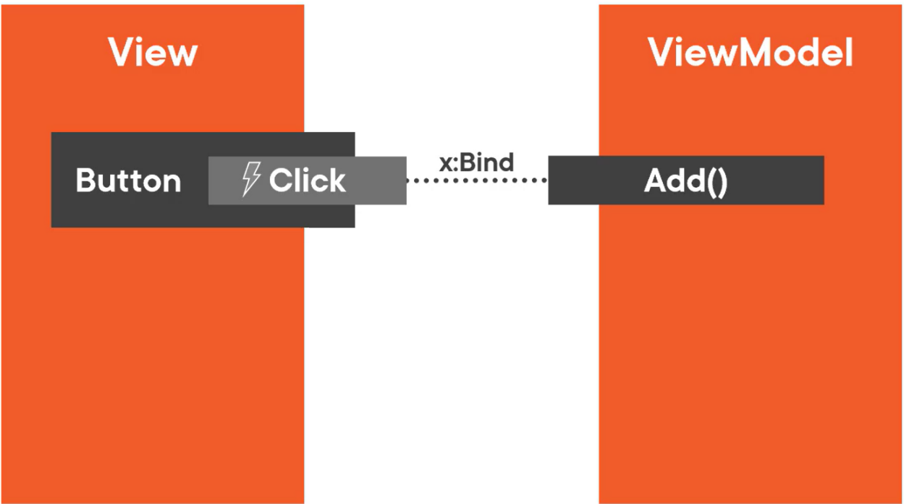
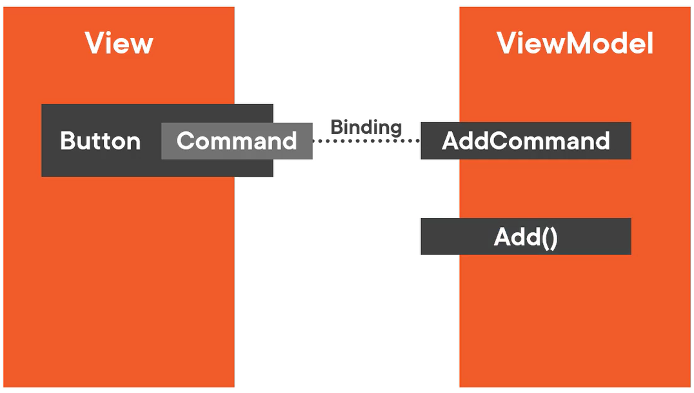

executing logic in a viewmodel
First Technique to Execute Logic in a ViewModel
Bind events to methods with x:Bind
Assume an Add method in the ViewModel that should be called every time a Button is clicked in the View:
Okay Approach
Use the Button’s Click event; install an event handler in the View’s code-behind file:

Disadvantage: An event handler needs to be installed in the code-behind file for every method of the ViewModel that needs to be called.
Better Approach: Bind Events to Methods with x:Bind
Bind the Click event to the Add method with x:Bind:

MainViewModel.cs
// …
public void Add()
{
var customer = new Customer { FirstName = "New" };
var viewModel = new CustomerItemViewModel(customer);
Customer.Add(viewModel);
SelectedCustomer = viewModel;
}
MainWindow.xaml
<!-- ... -->
<!-- Bind the Click event to the Add method: -->
<Button Margin="10" Click="{x:Bind ViewModel.Add}">
<StackPanel Orientation="Horizontal">
<SymbolIcon Symbol="AddFriend"/>
<TextBlock Text="Add" Margin="5 0 0 0"/>
</StackPanel>
</Button>
Second Technique to Execute Logic in a ViewModel
Use Commands.
Assume that the user can only use the Add method (via the Button) when a certain condition is met:
Okay Approach
Add a CanAdd property to the ViewModel and a IsEnabled property to the View, then x:Bind them. When the CanAdd condition is met, the Button is enabled:
Better Approach: Use Commands
Button’s have a Command property:

Create a class that implements this interface. Assign an instance of that class to the Button’s Command property. When Button is clicked, it will call the Execute method of its Command.
When Button’s Command property is set, Button will call the CanExecute method of Command. It uses return value to set its own IsEnabled property.
Button subscribes to CanExecuteChanged event of the Command. When Command raises this event, Button will call CanExecute method again.
Note that CanExecute and Execute accept a parameter of type object.
Optionally, set the Button’s CommandParameter property to specify the parameter’s type:

To use the Command, create an AddCommand property in the ViewModel of type ICommand.
Then, bind the Button’s Command property in the View to the AddCommand property in the ViewModel:

To trigger the Add method when the AddCommand property is set:
- Build a
DelegateCommand : ICommandclass (theDelegateCommandmight also be calledActionCommandorRelayCommand - The ViewModel creates an instance of this class and assigns it to its own
AddCommandproperty - ViewModel, when constructing DelegateCommand, will pass an Action delegate that points to the Add method of the ViewModel:

When the Button is clicked, the Execute method of DelegateCommand is called.
The Execute method calls the Action delegate which points to the Add method of the ViewModel: